Definição:
Conjunto de processos e técnicas utilizadas na projeção de dados multidimensionais em um plano de visualização bidimensional.
Objetivos:
Permitir a visualização de detalhes internos de estruturas multidimensionais, auxiliando a sua análise, além da extração de características significativas.
Medicina
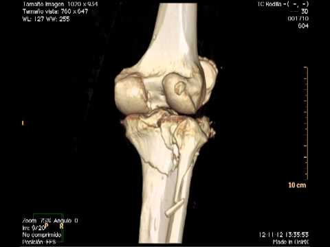
Medicina
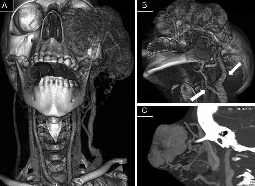
Astronomia
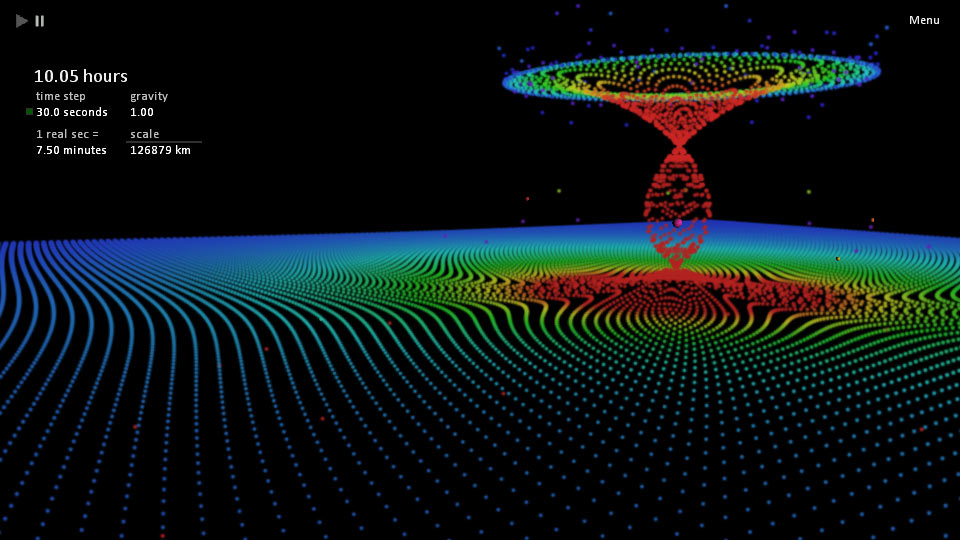
Física e Astrofísica
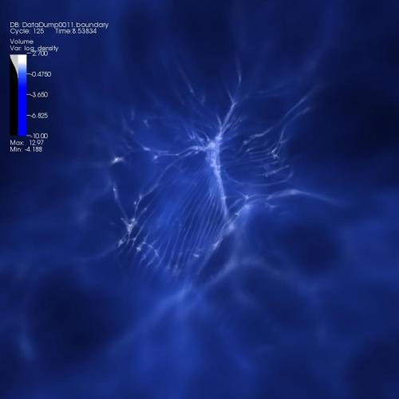
Química
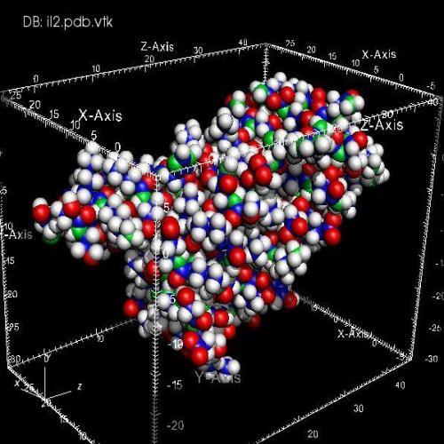
Geografia e Geologia
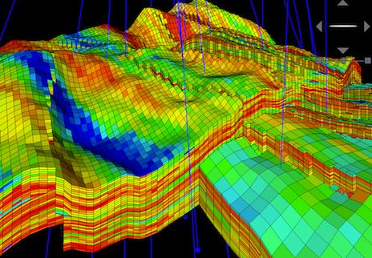
Matemática
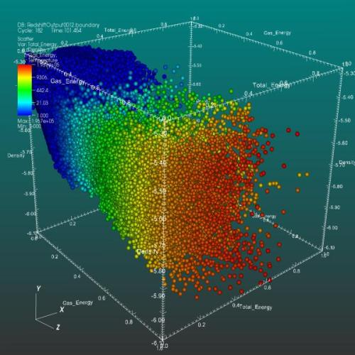
Voxel
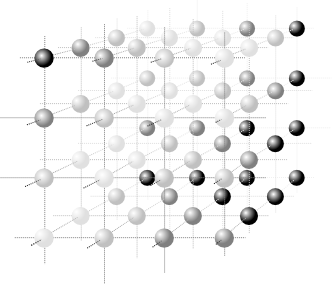
Representa um valor em um grid regular em um espaço tridimensional.
Um voxel tem sua posição determinada em relação aos demais voxels da imagem.
Voxel
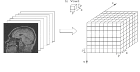
Cada voxel contém um conjunto variável de dados, a depender da origem dos dados.
Dados Volumétricos costumam ocupar muito espaço em disco e sua visualização demanda intenso processamento
O voxel pode ser definiido por:
$$ v = (x,y, z, S) $$
Onde o elemento S é um conjunto não-vazio de dados relativos à origem e/ou finalidade dos dados.
Principais processos da Visualização Volumétrica
Técnicas de visualização através de superfícies envolvem a extração e a representação de uma isosuperfície que é posteriormente visualizada através da utilização de técnicas convencionais da Computação Gráfica.
A visualização direta de volume consiste em representar o volume através de voxels 3D que são projetados diretamente em pixels 2D e armazenados como uma imagem, dispensando o uso de primitivas geométricas.
Contour-Connecting é um método de detecção de superfícies (SF), com caminhamento pelos objetos (ordem dos objetos), que opera inicialmente em cada fatia de dados individualmente. Após o usuário especificar um valor de limiarização (threshold), uma curva fechada conecta estes valores para cada fatia de dados
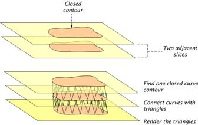Contour-Connecting é um método de detecção de superfícies (SF), com caminhamento pelos objetos (ordem dos objetos), que opera inicialmente em cada fatia de dados individualmente. Após o usuário especificar um valor de limiarização (threshold), uma curva fechada conecta estes valores para cada fatia de dados
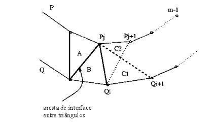O volume é percorrido procurando-se as células cujos valores nos vértices encontram-se no nível de threshold. Seis polígonos, um para cada face da célula, são gerados para estas células. A segunda etapa transfere a descrição geométrica destes polígonos a um visualizador de superfícies para a geração final da imagem.
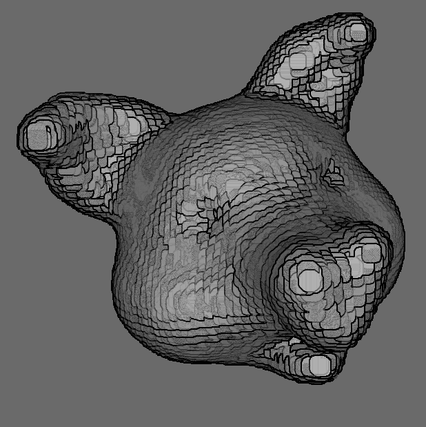De forma simplificada, o ray casting recorre ao lançamento de raios a partir da janela de observação, para que seja possível perceber qual a distância entre os objetos que compõem a cena. Abaixo temos um exemplo desse cenário.
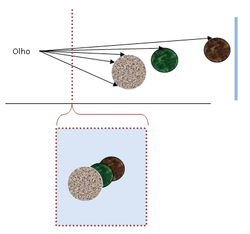O funcionamento do algoritmo ray casting consiste na varredura dos pixels da janela de visualização, sendo que haverá um lançamento raios paralelos que partem de cada pixel na tela em direção aos objetos que serão visualizados. Dessa forma, os principais elementos são o volume de dados, e suas propriedades, os parâmetros de visualização, a janela de visualização, e os raios ao longo dos quais serão processados os pontos de amostragem.
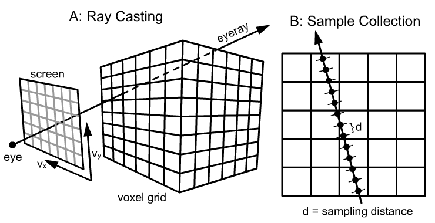O funcionamento do algoritmo ray casting consiste na varredura dos pixels da janela de visualização, sendo que haverá um lançamento raios paralelos que partem de cada pixel na tela em direção aos objetos que serão visualizados. Dessa forma, os principais elementos são o volume de dados, e suas propriedades, os parâmetros de visualização, a janela de visualização, e os raios ao longo dos quais serão processados os pontos de amostragem.
A intensidade de cada pixel é dada por: $$ I(a, b) = \int_{a}^{b} \! g(s) e^{- \int_{a}^{s} \tau (x) \ dx} \ ds $$ Em que $$ g(s) , \tau (x) $$ são utilizadas para determinar a cor do voxel resultante.
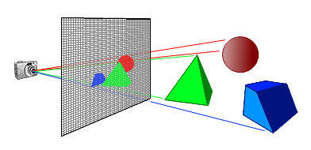O splatting é um algoritmo de visualização baseado em renderização volumétrica. Ele pega amostras da imagem de entrada e as reconstrói na imagem de saída a partir do volume classificado e iluminado. Neste algoritmo são tomados planos paralelos ao plano da imagem e feita a reconstrução da imagem para todas as amostras dessa camada da imagem, seguindo de dentro para fora da imagem.
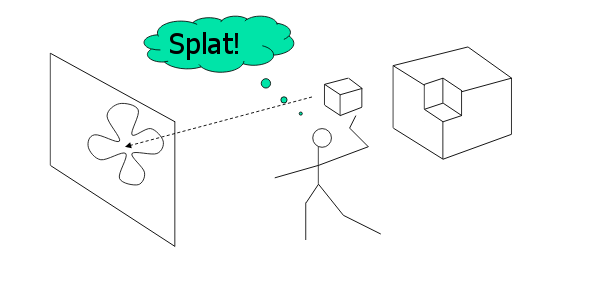Neste algoritmo, cada elemento é mapeado no plano da tela; em seguida, através de um processo de acumulação, tem sua contribuição adicionada à formação da imagem. O algoritmo termina quando todas as primitivas tiverem sido mapeadas na tela.
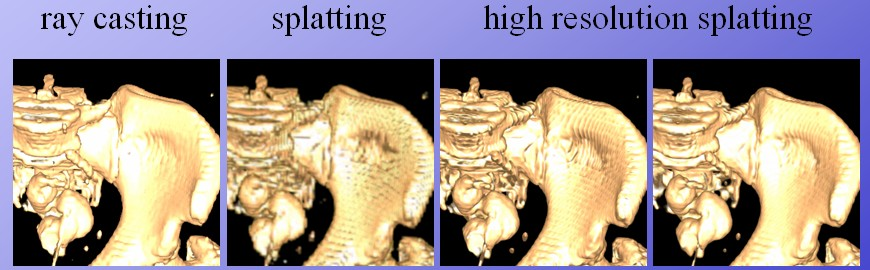
MANSSOUR, Isabel Harb; FREITAS, Carla Maria Dal Sasso;
Visualização Volumétrica;
Revista de Informática Téorica e Aplicada - UFRGS - Vol. IX - N. 2 - 2002
PAIVA, Anselmo Cardoso de; SEIXAS, Roberto de Beauclair; GATTASS, Marcelo;
Introdução à Visualização Volumétrica;
PUC - Rio - Jan/1999
DEMÈTRIO, Fernando Jorge Cutrim;
Visualização de dados volumétricos comprimidos baseado na Transformada do cosseno local;
UFMA - 2005
Vaa3D
http://home.penglab.com/proj/vaa3d/home/index.html
Surface Splatting
https://github.com/sebastianlipponer/surface_splatting
Ray Casting
http://lodev.org/cgtutor/raycasting.html
Laboratório de Computação Gráfica Aplicada - UEMA
https://github.com/LabCGUema
Produzido por
Lays Calvacante Ribeiro
Lucas de Souza Vieira
Rodrigo Frazão Maia
Pedro Fellipe Abreu Melo